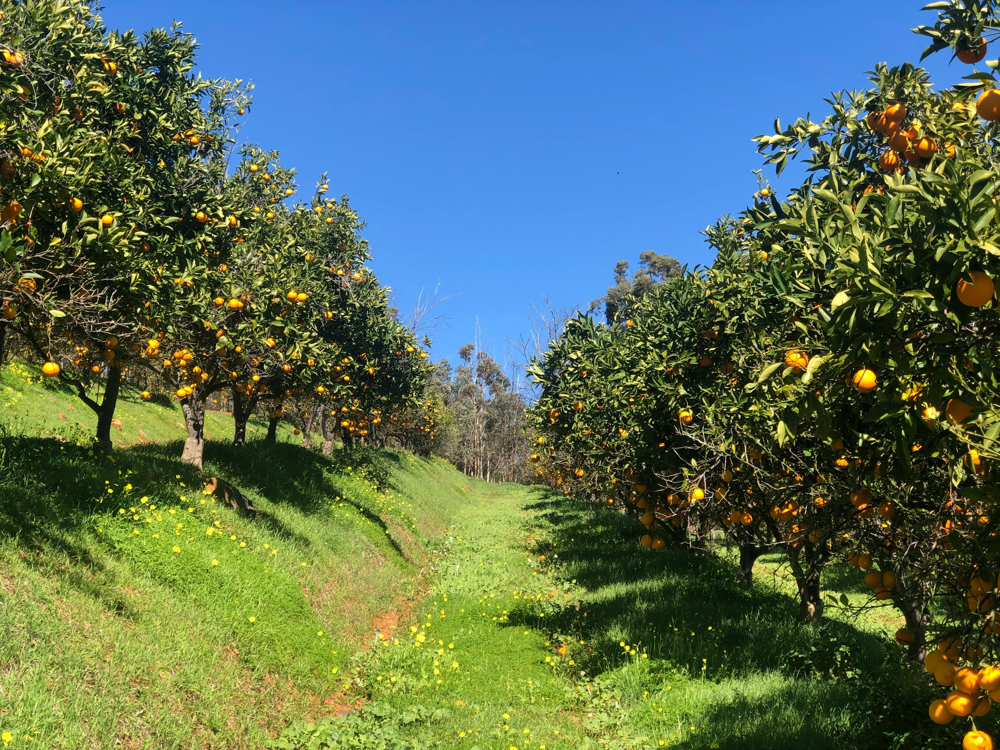

Welcome to Our Citrus Farm
Welcome to Rue Citrus Farm, a family-owned citrus orchard nestled in the heart of Kitui, Kenya. We specialize in growing fresh, high-quality oranges, lemons, and other citrus fruits under the warm African sun. Our mission is to bring naturally sweet and nutritious produce from our farm straight to your table, while promoting sustainable farming practices that support both our community and the environment.
